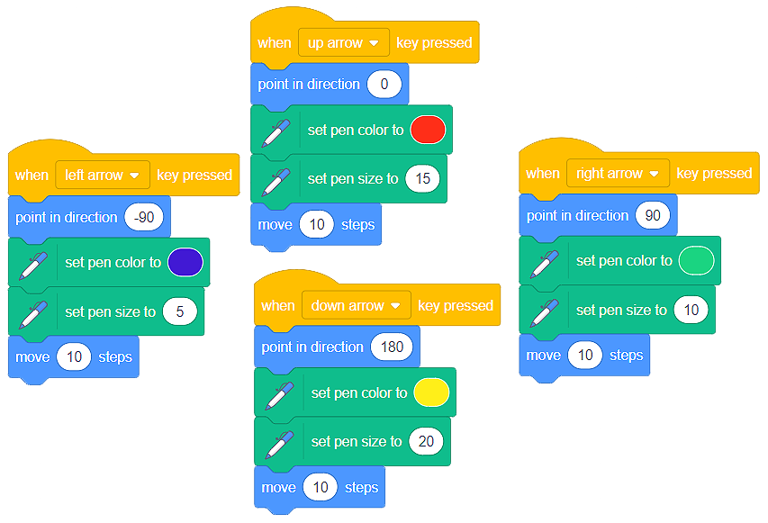
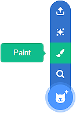

Crtanje¶
Svi likovi u Skreču sadrže nevidljivu olovku i imaju sposobnost da, tokom kretanja, ostavljaju trag na pozornici.
- Za crtanje, potrebni su nam blokovi iz kategorije Olovka (Pen). Ovu grupu blokova neophodno je da dodamo u radno okruženje Skreča. To činimo tako što kliknemo na dugme
 koje se nalazi u donjem levom uglu prozora, a zatim odaberemo ekstenziju Olovka.
koje se nalazi u donjem levom uglu prozora, a zatim odaberemo ekstenziju Olovka.

U okviru kartice Programiranje (Code), pojaviće se nova kategorija blokova Olovka. U okviru nje, na raspolaganju nam je 9 blokova namenjenih crtanju po pozornici. Pomoću njih brišemo išaranu pozornicu (erase all), spuštamo i podižemo olovku (pen down, pen up), lako kontrolišemo boju i debljinu olovke (set pen color, change pen color, set pen size, change pen size).

Inicijalno, olovka lika je podignuta. Da bi crtanje bilo moguće, neophodno je da olovku spustimo.
Crtanje “slobodnom rukom”¶
Kada pomislimo na crtanje slobodnom rukom, obično zamislimo kako crtamo olovkom. Zato ćemo, u program koji simulira ovaj oblik crtanja koristiti lik  , koji se nalazi u biblioteci likova.
, koji se nalazi u biblioteci likova.
Likovi u Skreču crtaju svojim centrom. Kako bi naša olovka crtala “grafitnim vrhom”, moramo da promenimo poziciju centra lika. To činimo u okviru kartice Kostimi (Costumes).
VIDEO - CENTAR LIKA
Kada smo razmatrali načine kretanja lika po pozornici, predstavili smo blok  . Ako beskonačan broj puta (Forever) ponovimo izvršavanje ovog bloka, lik će se neprestano kretati po pozornici tako što će pratiti kursor miša. Dakle, upotrebom ovog bloka možemo da simuliramo crtanje - pomerajući kursor miša po pozornici “crtaćemo” po pozornici.
. Ako beskonačan broj puta (Forever) ponovimo izvršavanje ovog bloka, lik će se neprestano kretati po pozornici tako što će pratiti kursor miša. Dakle, upotrebom ovog bloka možemo da simuliramo crtanje - pomerajući kursor miša po pozornici “crtaćemo” po pozornici.
Analiziraj sledeće skripte:

 Napravi program koji omogućava crtanje slobodnom rukom i obezbedi da se, pritiskom na taster s izvršavanje programa zaustavi. Potraži odgovarajuće blokove u kategorijama Događaji (Events) i Upravljanje (Control).
Napravi program koji omogućava crtanje slobodnom rukom i obezbedi da se, pritiskom na taster s izvršavanje programa zaustavi. Potraži odgovarajuće blokove u kategorijama Događaji (Events) i Upravljanje (Control).
Upravljanje kretanjem lika pomoću tastature i crtanje¶
Odlična je prilika da iskoristimo blokove koji obezbeđuju kretanje lika pomoću strelica i dodatno ih unapredimo tako da lik iscrtava linije određene boje i debljine.
Neka lik crta na sledeći način:
dok se kreće udesno, neka iscrtava liniju plave boje, debljine 5 koraka (piksela);
dok se kreće ulevo, neka iscrtava liniju zelene boje, debljine 10 koraka (piksela);
dok se kreće nagore, neka iscrtava liniju crvene boje, debljine 15 koraka (piksela);
dok se kreće nadole, neka iscrtava liniju žute boje, debljine 20 koraka (piksela).
Kreiraj sledeće blokove:
{kind=link}
Mi smo nacrtali ovu sliku:

Pokušaj da napraviš program koji iscrtava sličnu.
Apsolutno kretanje i crtanje¶

Analizom gornje slike uočavamo da nije teško odrediti tačke čijim spajanjem nastaje crtež brodića.
Napravi program koji iscrtava brodić linijama svetlo plave boje debljine 5 piksela. Ne zaboravi da obrišeš pozornicu pre nego što iscrtavanje započne. Takođe, ne zaboravi da postaviš macu-mornara na palubu brodića.
Moguće rešenje
{kind=link}
Pečat¶
Ponekad je potrebno da na pozornici iscrtamo i rotiramo složenije slike. Umesto da iznova i iznova iscrtavamo željeni oblik, zgodno je da kreiramo kostim određenog oblika, a onda ga umnožavamo i rotiramo koristeći blok Pečat .
Dovoljno je da kreiramo novi lik crtanjem , a zatim, u grafičkom editoru kartice Kostimi (Costumes) nacrtamo oblik koji želimo.
OVDE VIDEO ZMAJEVI
Pečat možemo da koristimo i sa kostimima likova koje pronalazimo u Skreč biblioteci likova.